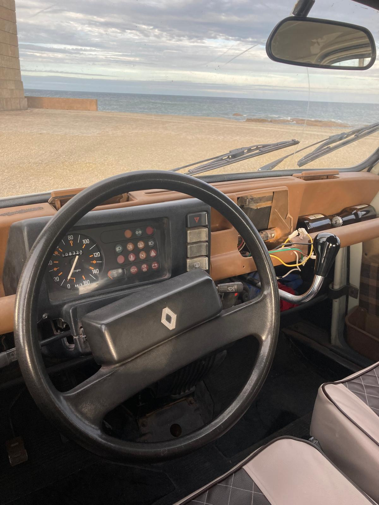

Une carrosserie grise, un moteur qui tourne encore rond, et des mois de garage pour la préparer à avaler 6 000 km de pistes jusqu'à Marrakech. Voici notre bolide sous toutes les coutures.

Trouvée d'occasion, carrosserie fatiguée mais mécanique saine, notre 4L a d'abord vécu plusieurs mois dans le garage familial : ponçage, peinture, remise en état complète. Elle a gardé sa robe grise d'origine, sobre et fidèle à l'esprit du 4L Trophy.
Aujourd'hui, elle est fin prête à prendre la route de Biarritz à Marrakech, avec à son bord tout le matériel scolaire destiné aux enfants du désert — et deux pilotes qui ne comptent pas la ménager.
Nous avons besoin de vousNeuf clichés de notre bolide, prêt à briller sur les pistes. Cliquez sur une photo pour l'admirer en grand.
Sièges, portière, habitacle : chaque recoin a été retapé à la main dans le garage familial.
Elle vous attend, direction Marrakech, les bras ouverts. N'hésitez pas à revenir l'admirer sur cette page — et à rejoindre l'aventure dès maintenant.
Rejoindre l'aventure